MAKANAN YANG DIREKOMENDASIKAN
1. Putih Telur

Sumber Gambar : freepik.com
Penderita penyakit ginjal disarankan untuk mengonsumsi putih telur dan menghindari kuning
telur. Pasalnya, kuning telur mengandung fosfor tinggi. Sementara itu, putih telur termasuk
ke jenis makanan untuk penderita sakit ginjal yang aman dikonsumsi karena mengandung fosfor
rendah yaitu sekitar 10 g dan merupakan sumber protein, vitamin, dan mineral yang baik.
Untuk menu sarapan, putih telur bisa diolah dengan cara direbus agar kandungan nutrisi di
dalamnya tidak hilang.
2. Ikan Salmon dan Tuna
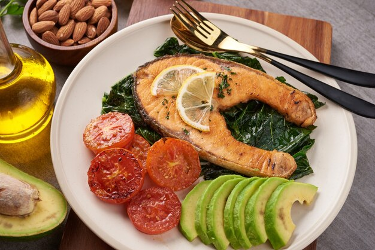
Sumber Gambar : freepik.com
Ikan salmon dan tuna termasuk dalam salah satu rekomendasi menu sarapan pagi untuk penderita
penyakit ginjal karena kaya akan asam lemak omega-3 yang baik untuk memperbaiki fungsi
ginjal serta rendah kalium, fosfor, dan natrium. Selain itu, asam lemak omega-3 juga
berperan penting dalam menjaga kadar kolesterol normal dan tekanan darah pada penderita.
Namun, sebaiknya batasi konsumsi ikan maksimal 2–3 kali seminggu.
3. Buah-buahan
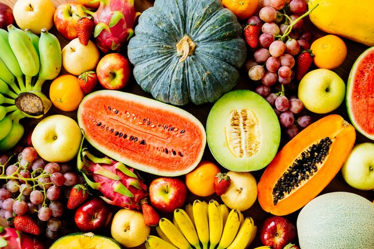
Sumber Gambar : freepik.com
Buah-buahan, seperti blueberi, juga termasuk ke dalam kategori makanan untuk penderita
penyakit ginjal yang baik dikonsumsi sehari-hari. Buah ini diketahui mengandung antioksidan
yang membantu mencegah kanker, diabetes, penyakit jantung, dan penurunan kognitif. Bluberi
juga memiliki kandungan kalium, sodium, dan fosfor yang rendah.
4. Kubis
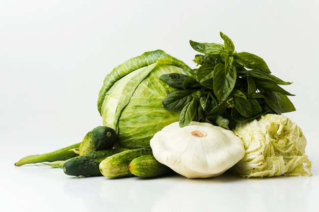
Sumber Gambar : freepik.com
Salah satu sayur yang baik untuk ginjal adalah kubis. Sayuran ini mengandung antioksidan,
serat serta vitamin B, C, dan K yang bagus untuk kesehatan tubuh, termasuk ginjal. Mengolah
kubis menjadi sup bisa menjadi pilihan menu sarapan pagi untuk penderita penyakit ginjal.
Kubis juga mengandung kalium, natrium, dan fosfor yang rendah.
5. Kembang Kol
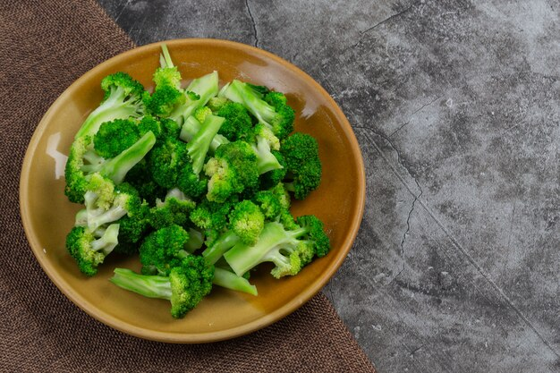
Sumber Gambar : freepik.com
Sup kembang kol juga menjadi salah satu pilihan sarapan pagi untuk penderita penyakit ginjal
karena dapat berperan sebagai antiinflamasi dan dilengkapi dengan serat. Sayuran ini juga
menawarkan berbagai vitamin yang baik untuk ginjal, seperti vitamin C, K, dan asam folat.
6. Sayuran Hijau
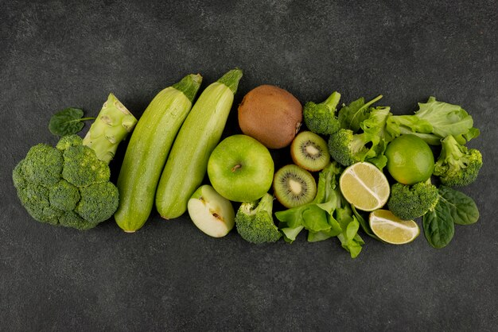
Sumber Gambar : freepik.com
Selain kubis dan kembang kol, penderita penyakit ginjal juga bisa menikmati olahan sayuran
hijau untuk sarapan pagi. Sayuran hijau, seperti kangkung dan bayam, merupakan makanan yang
baik untuk penderita penyakit ginjal stadium awal karena kaya akan antioksidan dan
mengandung berbagai vitamin dan mineral. Namun, makanan ini cenderung tinggi kalium,
sehingga tidak disarankan bagi penderita gangguan ginjal tahap lanjut.
7. Dada Ayam Tanpa Lemak
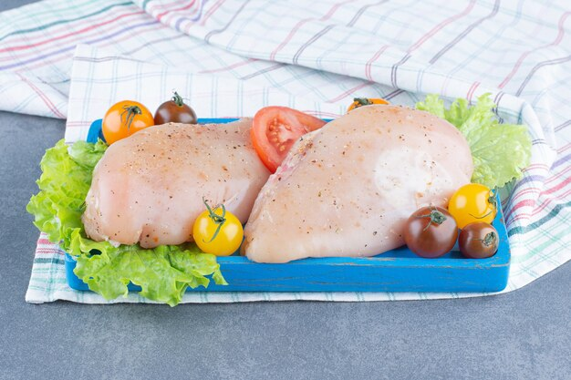
Sumber Gambar : freepik.com
Perlu diketahui, meski penderita penyakit ginjal disarankan untuk membatasi asupan protein,
kebutuhan protein tubuh tetap perlu dipenuhi. Maka dari itu, rekomendasi sarapan pagi untuk
penderita penyakit ginjal berikutnya adalah dada ayam tanpa lemak atau kulit.
Dada ayam merupakan pilihan yang tepat untuk memenuhi kebutuhan protein dan menjaga kesehatan
tubuh. Namun, sebaiknya hindari pengolahan dada ayam dengan cara digoreng atau dipanggang
karena dapat meningkatkan kadar fosfor dan natrium.
Sumber :
https://www.siloamhospitals.com/informasi-siloam/artikel/sarapan-pagi-untuk-penderita-penyakit-ginjal
MAKANAN YANG TIDAK DIREKOMENDASIKAN
1. Makanan kaleng
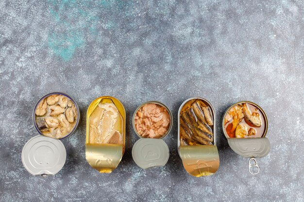
Sumber Gambar : freepik.com
sebagian besar jenis makanan kaleng juga perlu dihindari oleh penderita ginjal. Karena
makanan kaleng biasanya mengandung banyak pangawet yang berasal dari natrium. Disarankan
penderita penyakit ginjal lebih selektif dalam memilih makanan kaleng untuk membatasi
konsumsi natrium. Sementara itu, penderita penyakit ginjal dapat membilas dan mengeringkan
makanan kaleng tersebut sebelum mengkonsumsinya. Tips tersebut dapat dipraktikan contohnya
pada kacang dan tuna kalengan. Penelitian membuktikkan bahwa cara membilas dan mengeringkan
makanan kaleng dapat mengurangi kandungan natrium setidaknya 33-80 persen, tergantung jenis
produknya.
2. Alpukat
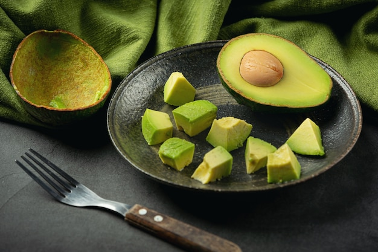
Sumber Gambar : freepik.com
alpukat merupakan salah satu makanan sumber yang sangat kaya kalium. Satu buah alpukat
berukuran sedang menyediakan 690 mg kalium.
3. Daging olahan
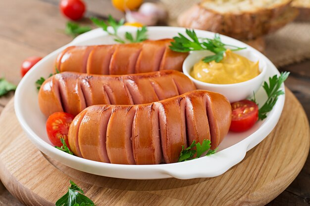
Sumber Gambar : freepik.com
daging olahan telah lama dikaitkan dengan penyakit kronis dan umumnya dianggap tidak sehat
karena kandungan pengawetnya. Daging olahan adalah daging yang diasinkan, dikeringkan,
diawetkan, atau diawetkan. Beberapa contoh daging olahan meliputi: Hot dog Bacon Pepperoni
Dendeng Sosis Daging olahan perlu dihindari penderita penyakit ginjal karena biasanya
mengandung banyak garam (natrium), yang sebagian besar untuk meningkatkan rasa dan
mempertahankan rasa. Selain itu, daging olahan juga memiliki kandungan protein yang tinggi.
Jika Anda telah diberitahu untuk membatasi asupan protein oleh dokter, penting untuk
membatasi konsumsi daging olahan.
4. Roti ganfum utuh
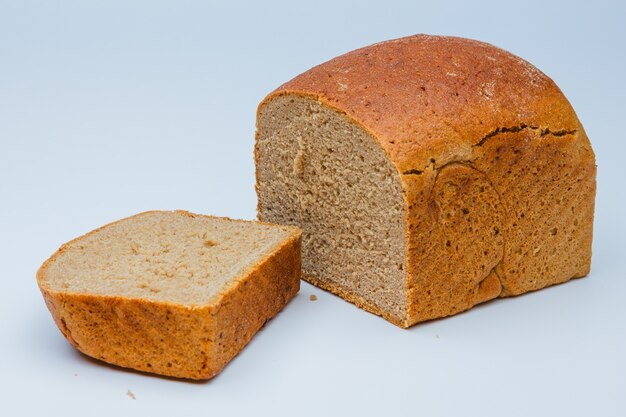
Sumber Gambar : freepik.com
Meski, umumnya roti gandum utuh ini mejadi sumber makanan bergizi karena tinggi serat. Roti
gandum utuh perlu dihindari penderita penyakit ginjal karena kandungan fosfor dan kaliumnya
yang cukup tinggi. Satu porsi (30 gram) roti gandum utuh mengandung sekitar 57 mg fosfor dan
69 mg kalsium. Sebagai perbandingan, roti tawar hanya mengandung 28 mg fosfor dan kalium.
Selain itu, sebagian besar roti dan produk roti (terlepas dari apakah itu roti tawar atau
gandum utuh) juga mengandung jumlah natrium yang relatif tinggi. Jadi, disarankan untuk
mengecek label nutrisi produk sebelum mengkonsumsinya dan mengontrol porsi konsumsi makan
Anda agar tidak berlebihan.
5. Nasi merah
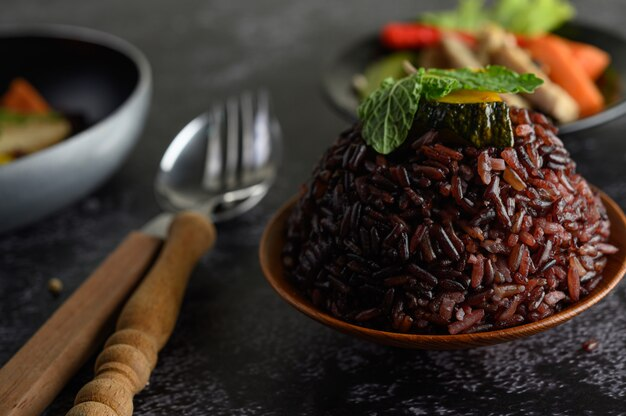
Sumber Gambar : freepik.com
beras merah seperti gandum utuh, yang kaya kandungan kalium dan fosfor. Sehingga, penderita
ginjal perlu menghindarinya. Satu cangkir nasi merah matang mengandung 150 mg fosfor dan 154
mg kalsium. Sedangkan 1 cangkir nasi putih matang, hanya mengandung 69 mg fosfor dan 54 mg
kalium. Biji-bijian bergizi rendah fosfor yang bisa menjadi pengganti yang baik untuk beras
merah, seperti: Bulgur Buckwheat/soba Jelai Couscous.
6. Pisang
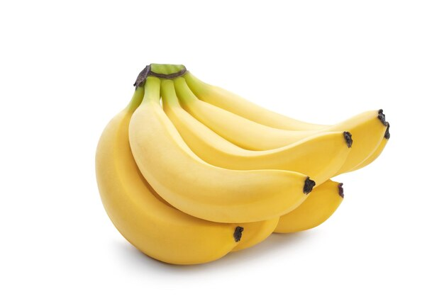
Sumber Gambar : freepik.com
pisang dikenal karena kandungan kaliumnya yang tinggi. Meskipun secara alami rendah natrium,
1 buah pisang ukuran sedang menyediakan 422 mg kalium. Untuk alterntif buah tropis, nanas
bisa menjadi pilihan yang baik. Nanas mengandung kalium yang jauh lebih sedikit dari pada
buah tropis lainnya.
7. Susu
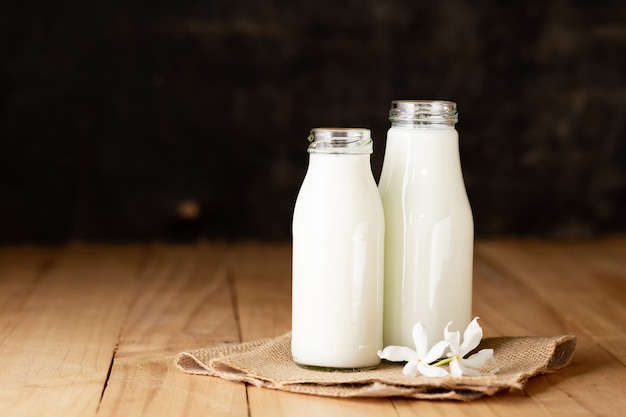
Sumber Gambar : freepik.com
susu merupakan sumber alami fosfor dan kalium, sehinga sering direkomendasikan untuk
dihindari atau dibatasi oleh penderita penyakit ginjal. Misalnya, 1 cangkir (240 ml) susu
murni menyediakan 222 mg fosfor dan 349 mg kalium. Mengkonsumsi terlalu banyak susu, bersama
dengan makanan kaya fosfor lainnya, dapat merusak kesehatan tulang pada mereka yang
menderita penyakit ginjal. Ketika ginjal rusak dapat menyebabkan penumpukan fosfor dalam
darah, yang dapat menarik kalsium dari tulang Anda. Hal ini dapat membuat tulang tipis dan
lemah dari waktu ke waktu dan meningkatkan risiko retak atau patah tulang Produk susu juga
tinggi protein. Satu cangkir (240 ml) susu murni menyediakan sekitar 8 gram protein. Mungkin
penting untuk membatasi asupan susu untuk menghindari penumpukan limbah protein dalam darah.
Alternatifnya, penderita penyakit ginjal dapat mengkonsumsi susu beras yang tidak diperkaya
dan susu almond karena jauh lebih rendah kandungan kalium, fosfor, dan proteinnya dari pada
susu sapi.
8. Jeruk
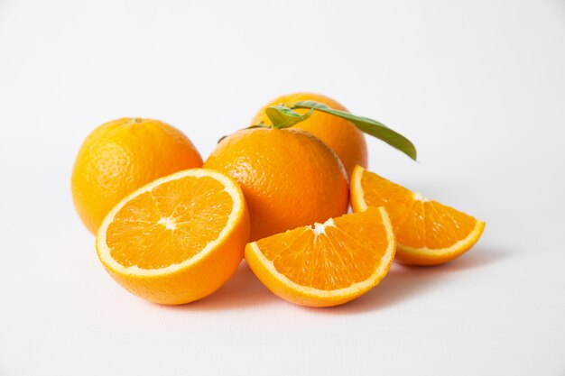
Sumber Gambar : freepik.com
jeruk juga merupakan buah yang kaya kandungan kalium. Satu jeruk besar (184 gram) menyediakan
333 mg kalium. Selain itu, ada 473 mg potasium dalam 1 cangkir (240 ml) jus jeruk. Mengingat
kandungan potasiumnya, jeruk dan jus jeruk mungkin perlu dihindari atau dibatasi oleh
penderita penyakit ginjal. Pengganti yang baik untuk jeruk dan jus jeruk adalah buah yang
kandungan kaliumnya rendah, seperti: Anggur Apel Cranberry
9. Acar
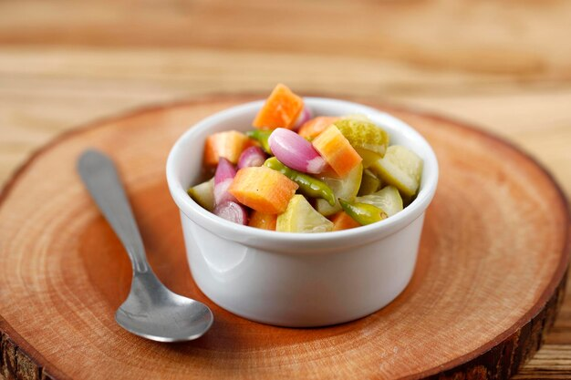
Sumber Gambar : freepik.com
acar contoh makanan yang diawetkan atau diasamkan. Biasanya, sejumlah besar garam ditambahkan
selama proses pengawetan atau pengawetannya.
10. Aprikot

Sumber Gambar : freepik.com
aprikot salah satu makanan yang mengandung kalium tinggi. Kandungan kalium bisa lebih tinggi
pada aprikot kering. Satu cangkir aprikot kering (190 gram) menyediakan lebih dari 1.500 mg
kalium. Jadi, saran terbaik untuk penderita penyakit ginjal adalah menghindari aprikot,
terutama yang kering.
11. Kentang dan ubi jalar
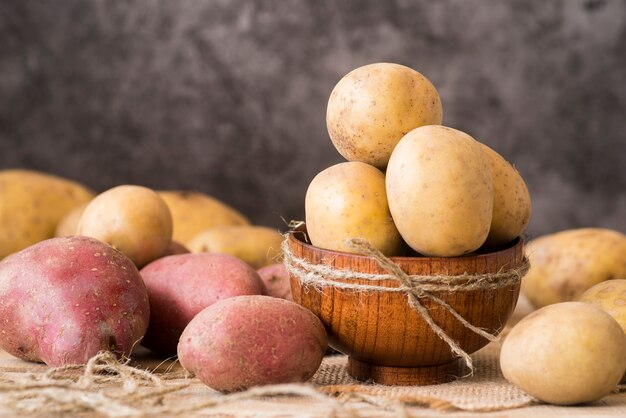
Sumber Gambar : freepik.com
kentang dan ubi jalar adalah sumber makanan kaya kalium. Hanya satu kentang panggang
berukuran sedang (156 gram) mengandung 610 mg kalium. Sedangkan, satu ubi jalar panggang
berukuran rata-rata (114 gram) mengandung 541 mg kalium. Namun, memotong kentang dan ubi
jalar menjadi potongan-potongan kecil dan tipis, lalu merebusnya setidaknya selama 10 menit
dapat mengurangi kandungan kalium sekitar 50 persen. Kentang dan ubi jalar yang direndam
dalam air minimal 4 jam sebelum dimasak terbukti memiliki kandungan kalium yang lebih rendah
dibandingkan dengan kentang yang tidak direndam sebelum dimasak. Meski begitu, kalium pada
kentang dan ubi jalar tidak bisa dihilangkan sepenuhnya. Jadi, lebih baik penderita penyakit
ginjal dapat mengontrol konsumsi kentang dan ubi jalar dengan hati-hati. Konsultasi dengan
dokter Anda bisa membantu untuk mengetahui batasan amannya.
12. Tomat
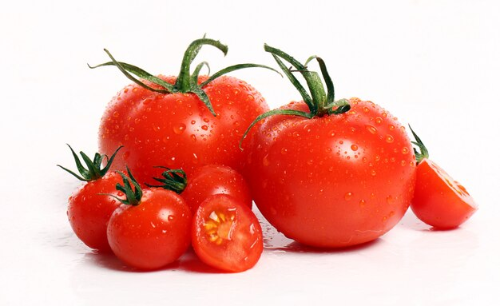
Sumber Gambar : freepik.com
tomat adalah sumber makanan lainnya yang tinggi kalium. Buah ini dapat disajikan mentah atau
direbus dan sering digunakan untuk membuat saus. Hanya 1 cangkir (225 gram) saus tomat dapat
mengandung lebih dari 900 mg kalium. Disarankan selalu mengecek label nutrisi untuk memiliki
kandungan kalium lebih rendah.
13. Makanan dalam kemasan, instan san disap saji
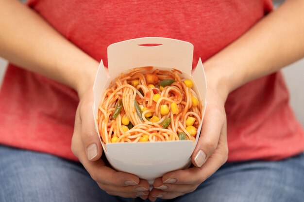
Sumber Gambar : freepik.com
makanan olahan dapat menjadi komponen utama natrium dalam makanan. Makanan olahan, seperti
makanan kemasan, instan, dan siap saji biasanya yang paling banyak diproses. Dengan demikian
mengandung natrium paling banyak. Faktanya, makanan yang diproses secara berat tidak hanya
mengandung sejumlah besar natrium, tetapi juga umumnya kekurangan nutrisi.
14. Lobak swiss, bayam dan bit
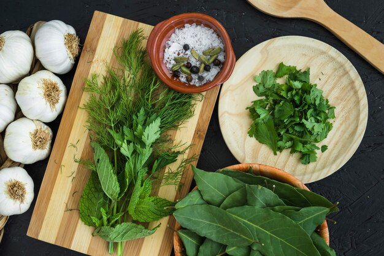
Sumber Gambar : freepik.com
lobak Swiss, bayam, dan sayuran bit adalah sayuran berdaun hijau yang mengandung berbagai
nutrisi dan mineral dalam jumlah tinggi, termasuk kalium. Saat disajikan mentah, jumlah
kalium bervariasi antara 140-290 mg per cangkir (30 gram). Saat disajikan matang, kandungan
kalium dapat meningkat, meskipun ukuran porsinya menyusut.
15. keripik dan kerupuk
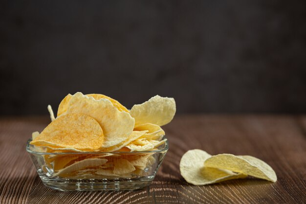
Sumber Gambar : freepik.com
makanan ringan siap saji, seperti keripik dan kerupuk, cenderung kurang nutrisi dan relatif
tinggi garam. Namun, kecenderungan dari kita justru suka lupa diri untuk membatasi
memakannya. Terlebih lagi, jika keripik dibuat dari kentang yang mana mengandung sejumlah
besar kalium.
Sumber :
https://health.kompas.com/read/2022/05/19/190000068/16-makanan-yang-perlu-dihindari-penderita-penyakit-ginjal?page=all